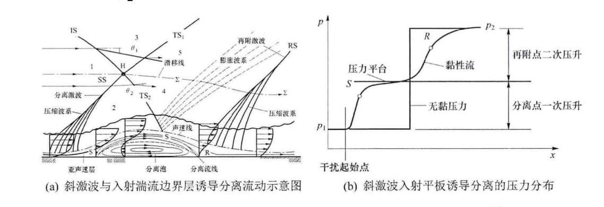
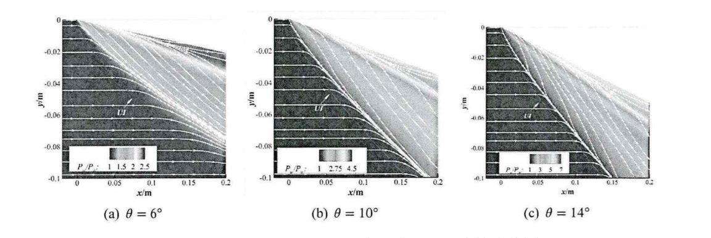
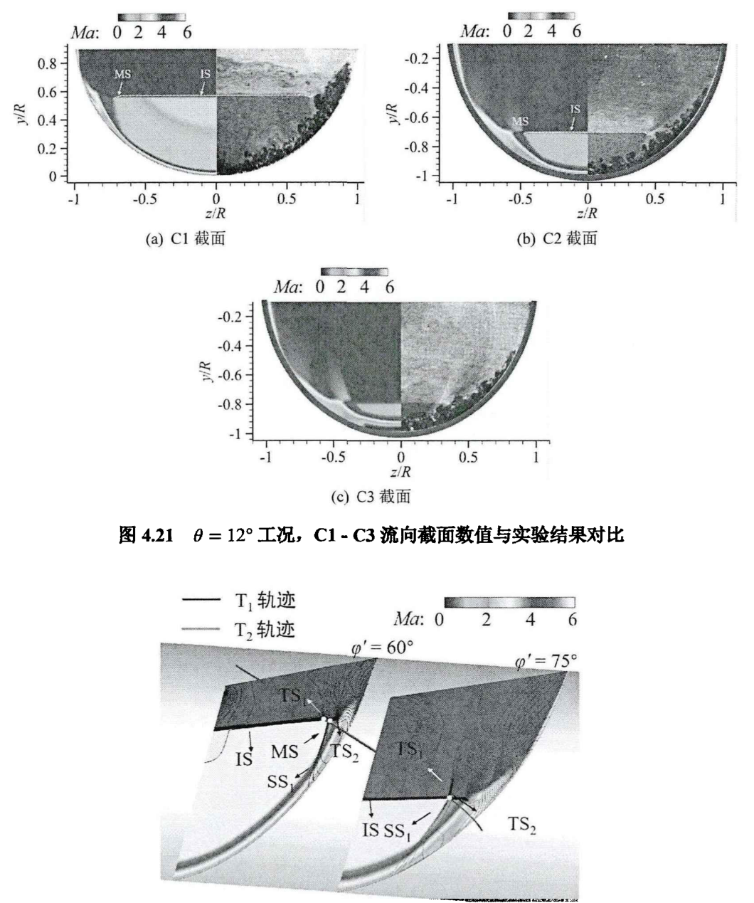
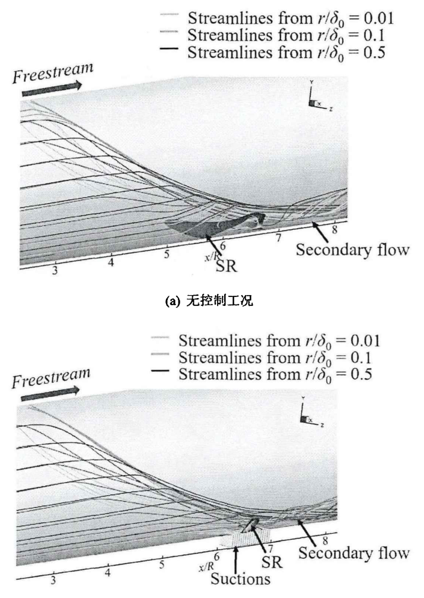

01中文摘要
围绕高超声速典型构型的激波/湍流边界层干扰，结合数值模拟、风洞实验和理论方法研究波系结构、流动分离与流动控制。针对二维压缩拐角和斜激波入射平板，修正壁温对分离准则的影响，建立干扰长度标度律，发现高、低雷诺数工况满足不同标度关系；针对圆柱-尾裙和尖锥-尾裙建立轴对称干扰长度标度律；针对立楔-平板发展三维扫掠干扰上游影响线标度律。以内凹半圆柱面模拟内转式进气道，揭示反射类型转变、旋风涡和流向涡对演化，并提出抽吸-扰流片组合控制方案。
原始摘要（英文/原文）
吸气式高超声速飞行器的内外流场中存在复杂的激波/湍流边界层干扰现象,一旦激波引起流动分离,不仅会造成壁面的气动力/热载荷急剧升高,甚至会诱发非定常流动现象,给飞行器研制带来挑战。高超声速条件下的激波/湍流边界层干扰研究不仅缺乏对经典构型干扰规律的凝练,还缺乏对以内转式进气道为代表的三维复杂构型干扰的模化提炼。本文紧密结合数值模拟、风洞实验和理论方法,围绕高超声速条件下典型构型的激波/湍流边界层干扰的波系结构、流动分离以及流动控制展开研究。针对二维、轴对称和三维扫掠激波/湍流边界层干扰开展了标度律研究,涵盖了宽范围的马赫数、雷诺数和壁温条件。针对压缩拐角和斜激波入射平板二维构型,通过修正壁温对分离准则的影响,建立了高超声速条件下激波/湍流边界层干扰长度的标度律,发现高雷诺数和低雷诺数工况的干扰长度满足不同的标度律,高雷诺数工况的干扰长度相较于低雷诺数工况增长更快。针对圆柱-尾裙和尖锥-尾裙两种构型,建立了轴对称干扰长度的标度律,发现轴对称构型的干扰长度相较于二维构型增长更快。针对立楔-平板构型产生的三维扫掠激波/湍流边界层干扰,通过修正雷诺数的影响,发展了一种适用于宽马赫数和雷诺数范围的上游影响线标度律。针对内转式进气道流动中的三维激波/湍流边界层干扰问题,采用斜激波入射内凹半圆柱面研究模型,在来流马赫数为6的条件下,研究了斜激波的气流偏转角对干扰流场的影响。结果表明,斜激波与内凹半圆柱面干扰产生了以扫掠、入射及反射为主要特征的流动结构。发现斜激波扫掠内凹半圆柱面发生流动分离时,分离激波与入射激波干扰经历了马赫反射向规则反射的转变,利用局部二维化理论,揭示了反射类型转变的机理,并建立了斜激波扫掠内凹半圆柱面上游影响线的标度律。激波扫掠与入射相耦合形成了具有复杂拓扑结构的三维分离区,厘清了分离区内的旋风涡随着气流偏转角的增大而逐渐减小直至消失的演变规律,并建立了斜激波入射内凹半圆柱面干扰长度的标度律。入射激波反射后,上游产生的低能流在对称面对撞并形成流向涡对,揭示了流向涡对向下游发展的演化规律。针对斜激波入射内凹半圆柱面产生的大尺度流动分离,研究了抽吸、扰流片对流动分离的影响。结果表明,在内凹半圆柱面底部开设抽吸缝可以显著减小中心分离区,但难以彻底吸除低能流,其抑制气流汇聚的效果不佳。厘清了抽吸缝几何参数对抽吸效果的影响规律,进而改进了抽吸缝设计。在内凹半圆柱面侧壁安装与扫掠分离线平行的扰流片,可以延迟激波扫掠内凹半圆柱面的分离,通过分析扰流片几何参数对激波扫掠区的影响,揭示了扰流片抑制两侧气流向对称面汇聚的机理。据此提出了抽吸-扰流片组合控制方案,不仅消除了内凹半圆柱面的中心分离区,而且显著降低了出口截面的低能流高度,为三维内转式进气道流动控制提供了重要参考。
02阅读说明
中文学位论文（实验+数值+理论，155页）。材料为三份分段精读笔记（覆盖PDF p.1–155）与deep_input/993.md顶部图件清单，未重读738KB全文，仅回读bundle末尾第6章结论核对。论文按“绪论—数值与实验方法—二维/轴对称/三维扫掠标度律—斜激波入射内凹半圆柱面—流动控制—结论”组织。原始材料为扫描OCR，公式与表格损坏严重：式(3.3)–(3.6)、(3.8)–(3.10)、(3.16)–(3.33)、(3.38)–(3.43)、(4.6)、(5.1)–(5.4)等多处仅存式号或残片，个别表格单元格疑OCR误读。信息完整度：章节结构、各章工况矩阵、主要定量结果与结论完整；部分公式代数形式与个别表项不确定，凡不能确认处均标“受限于材料，无法确认”。 文章类型：综述、学位论文
03一句话核心与三句话摘要
围绕高超声速典型构型SWTBLI，建立二维/轴对称/三维扫掠干扰长度标度律，并以抽吸+扰流片组合控制使分离区减80%。
- 高超声速条件下经典简化构型缺乏统一的干扰长度标度律，内转式进气道所代表的三维内凹壁面又缺乏能解耦壁面曲率与激波强度的简化模型与针对性控制手段。 原文明确
- 作者汇总宽Ma、Re、壁温的风洞与高精度数值数据建立二维、轴对称及三维扫掠上游影响线标度律，并以Ma∞=6斜激波入射内凹半圆柱面（R=50 mm，θ=6°–14°）的PLS实验、RANS与局部二维化理论，揭示马赫反射→规则反射转变、旋风涡与流向涡对演化。 AI概括
- 抽吸显著减小中心分离区（最高约91%）、扰流片抑制低能流汇聚并使出口低能流高度降约17%，二者组合使分离区减小80.02%、低能流高度降16.98%、流向涡强度降41.12%，分离区与出口流场品质同时改善。 原文明确
04核心内容清单
| 要点 | 类型 | 重要性 | 原文依据 | 属性 |
|---|---|---|---|---|
| 二维高超声速SWTBLI长度标度律：低Re_δ*<10^4为L*=1.45S*（R²=0.96），高Re_δ*>10^4为L*=2.33S*（R²=0.89），高Re工况干扰长度增长更快。 | 标度律/定量结果 | A | 式(3.12)(3.13)，p.53–54/35–36，图3.3 | 原文明确 |
| 壁温修正是高超声速标度律成立的前提：低Re数据经式(3.9)因子F修正后才落到Souverein曲线L*=1.3S*上；UM加热壁M5R6H的L=7.5 mm，约为同工况绝热壁3.2 mm的2.3倍。 | 机理/定量结果 | A | p.50/32；p.53/35；表3.1，p.51–52/33–34 | AI概括 |
| 轴对称构型标度律：圆柱-尾裙与尖锥-尾裙低Re为L*=1.95S*（R²=0.88），高Re为L*=3.28S*^n（R²=0.87），低、高Re下均比二维增长更快。 | 标度律 | A | 式(3.36)(3.37)，p.66–68/48–50，图3.11 | 原文明确 |
| 轴对称与二维分离准则一致：同来流下圆柱-尾裙初始分离偏转角θf明显高于压缩拐角，但Δp_sep/p∞接近（如M2.5C19与M2.5HF28分别为3.05与3.26），说明初始分离由激波强度而非几何偏转角控制。 | 判据/机理 | A | 表3.3，p.64/46 | 原文明确 |
| 三维扫掠上游影响线UJ标度律：引入Mn与Re修正后用三次多项式归一化Ma2–6、θ6°–23°、Re_δ*10^5–10^6全部工况，R²=0.998；原始Lu律在高Re下明显偏离。 | 标度律 | A | 式(3.41)–(3.44)，p.72–74/54–56，图3.18–3.19 | 原文明确 |
| 斜激波入射内凹半圆柱面流场按“扫掠—入射—反射”划分为激波扫掠区、耦合干扰区、激波反射区，三区分别以UJ、对称面分离区、CVP与剪切层增厚为特征。 | 流场分区 | A | p.86–102/68–84；4.4节，p.113–114/95–96 | 原文明确 |
| 分离激波SS1与入射激波IS的干扰随极角φ增大由马赫反射转变为规则反射，理论转变角φ_tr随θ增大由78.2°（6°）降至71°（14°）；激波极线校核偏差≤1.4°。 | 波系机理 | A | 表4.3，p.95/77；p.85–86/67–68；p.93–94/75–76 | 原文明确 |
| θ=6°–12°对称面分离区存在一对反向旋转的旋风涡，焦点间距随θ增大而增大、旋风涡尺度随θ增大而减小；θ=14°时旋风涡消失。 | 拓扑/涡结构 | A | p.97–102/79–84；图4.34，p.99/81 | 原文明确 |
| θ>10°时两侧低能流在对称面相撞形成流向涡对CVP并诱导二次分离SL4；CVP卷吸自由来流使低能流高度持续增长，θ=14°出口D_s≈0.46R（约0.45R），中心低能流区面积占比达61%。 | 机理/定量结果 | A | 表4.6，p.112/94；p.143/125 | 原文明确 |
| 对称面干扰长度随θ单调增大：L=50.00/54.70/62.00/67.40/81.10 mm（θ=6°/8°/10°/12°/14°），L*=9.09/15.35/24.64/35.68/54.56，式(4.14)拟合R²=0.99。 | 标度律/定量结果 | A | 表4.4，p.109/91；式(4.14)，p.108/90 | 原文明确 |
| 均匀抽吸缝7组工况分离区体积减小84.15%–91.07%（SC3–SC5>90%），但缝长/缝间距影响最大、流量损失随抽吸面积上升；SC8非均匀缝在φ_s=0.89%下仍减90%，较SC3/SC4/SC5流量损失降9.5%/32%/56%。 | 控制效果 | A | 表5.2，p.118/100；表5.4，p.124–126/106–108 | 原文明确 |
| 抽吸对低能流汇聚与流向涡强度控制能力弱：SC1出口低能流高度与无控制差别较小，低能流区σ_low仅由0.226升至0.262，流向涡仍强。 | 控制局限 | A | 表5.3，p.124/106；图5.12，p.125/107 | 原文明确 |
| 扰流片装于扫掠区上游可抑制低能流汇聚并延迟扫掠分离：RVC4（h_v=0.7δ0、s_v=1.0l_v、α_v=20°）使出口低能流高度降16.05%、涡强降63.21%，但中心分离区反而增大（ε_v为负）。 | 控制效果/代价 | A | 表5.6，p.135/117；表5.7，p.140/122 | 原文明确 |
| 抽吸+扰流片组合（CBC）兼顾减分离与抑汇聚：分离区减80.02%、ε_Ds=16.98%、ε_ω=41.12%，出口总压恢复与各区平均马赫数均增大；θ=6°与14°外推分别减100%与87.5%。 | 控制方案 | A | 表5.7，p.140/122；图5.30，p.138/120 | 原文明确 |
| 第2章以Schülein立楔-平板与Narayanaswamy内凹柱面-斜坡两个算例完成RANS验证：y+<1网格可复现主/二次分离线、再附线、C3相交激波与壁压，但三套网格Cf峰值均低于实验。 | 数值验证 | B | p.39–45/21–27，图2.10–2.17，表2.2 | 原文明确 |
05引言：研究问题与领域缺口
吸气式高超声速飞行器进气道靠激波减速增压，边界层同时发展，激波/湍流边界层干扰（SWTBLI）不可避免；分离会带来力/热载荷与压力脉动剧增甚至进气道不起动（p.19–20/1–2）。四类进气道中，二元与轴对称已工程应用，侧压式易在角区分离，内转式压缩效率高但存在三维激波/激波与激波/曲面边界层干扰，易大分离并诱导低速流向涡对（p.20/2）。作者指出三处缺口：经典构型缺高超声速统一标度律；内转式进气道缺针对性简化模型（Smart指出其干扰既非入射型也非扫掠型）；内凹壁面分离与流向涡对调控手段匮乏（p.20–21/2–3；p.34/16）。目标分三步：建立二维、轴对称干扰长度与三维扫掠上游影响线标度律；以“斜激波入射内凹半圆柱面”解耦壁面曲率与激波强度并建立预测方法；提出抽吸、扰流片及组合控制方案（p.34/16；p.77/59）。
06流动条件与几何构型
| 项目 | 数值/描述 | 依据 | 备注 |
|---|---|---|---|
| 二维标度律数据范围（压缩拐角/斜激波入射平板） | M∞约4.8–11.4；θ=6°–40°；L≈1.5–254 mm；Re_δ*与Re_θ覆盖10^3–10^5量级；Tw/Tr=0.2–1.9 | 表3.1，p.51–52/33–34 | 实验含CUBRC、IC、CAAA、GDL、DLR、ARC、UA；LES/DNS含UM、LHD，另补XJTU DNS |
| 二维加热壁对照工况 | UM M5R6H：L=7.5±1.7 mm，Re_δ*=3890，Tw/Tr=1.9；同工况绝热M5R6：L=3.2 mm，Re_δ*=3764，Tw/Tr=0.8 | 表3.1，p.51–52/33–34 | 加热壁使干扰长度约增至2.3倍 |
| 二维标度律分界 | Re_δ*<10^4用L*=1.45S*；Re_δ*>10^4用L*=2.33S* | 式(3.12)(3.13)，p.53–54/35–36 | 拟合剔除受三维效应与斜劈尾缘膨胀波污染的M5C40、M11R20；ARC工况单列 |
| 轴对称构型数据范围 | 圆柱-尾裙：L=4.55±1.25～89.79±1.98 mm，Re_δ*=2.9×10^3～3.3×10^4，Tw/Tt=0.14–0.30；尖锥-尾裙：L=9.97±8.41～51.70±1.75 mm，Re_δ*=5.7×10^3～9.6×10^4，Tw/Tt=0.13–0.63；Ma约2–15，θ约7°–40° | 表3.4、3.5，p.65–66/47–48 | 圆柱-尾裙数据来自IC、UM、ARC、CUBRC、克兰菲尔德；DNS来自CARDC；尖锥-尾裙来自CUBRC |
| 轴对称无粘均匀流校核 | Ma∞=10、半锥角30°尖锥：锥激波后沿壁面法向速度变化<0.5%、密度变化<5%；CUBRC尖锥-尾裙（半锥角6°、尾裙与轴线42°、Ma6）第二道锥激波后速度变化<1%、密度变化<4% | p.57/39；p.59/41 | 用于支撑波后近似均匀流假设 |
| 三维扫掠数据范围 | Ma=2–6；θ=6°–23°；Re_δ*约1.2×10^5–1.8×10^6；Mn约1.26–2.74 | 表3.7，p.70–73/52–55 | 含RANS与实验；本文补Ma6、θ=6°/10°/14° |
| 本文Ma6立楔-平板RANS补充算例 | 平板450 mm×180 mm，立楔高100 mm；θ=6°、10°、14°；δ0=6 mm；取x=0.12 m壁面压力比较 | p.71/53 | 来流与KDJB330一致，SST湍流模型 |
| 第4章来流与几何（基准） | Ma∞=6；p∞=1.2 kPa；T∞=121 K；300 K等温壁；内凹半圆柱面R=50 mm、长10R、厚5 mm；尖前缘1.6R；两侧肋板高0.18R；斜劈θ=12°、宽4R、斜面长5R | p.78–80/60–62；p.80–81/62–63 | 双入口压力匹配产生斜激波，Inflow 2取θ斜激波波后条件 |
| 第4章边界层与雷诺数 | 无干扰时x=5R处δ0=5.65 mm；各θ工况Re_δ*=1430，Tw/Tt=0.31，k*=2.50 | p.81/63；表4.4，p.109/91 | PLS测得边界层约4 mm，低于CFD，作者称PLS暗区主要反映温度分布 |
| 第4章偏转角工况 | θ=6°、8°、10°、12°、14°（间隔2°）；无粘入射点均固定于对称面x=7R；实验仅θ=12° | p.80/62；p.95/77 | 各θ单独建模，不合并为单一工况 |
| 第4章PLS拍摄位置 | 对称面z/R=0及C1–C5五个流向截面；C4位于x=7R，C1、C5与C4间隔1.5R，C2、C3间隔1.1R、1.0R | p.78–80/60–62，图4.5 | C2/C3间隔方向按原文图4.5，OCR未明示 |
| 第4章实验状态（θ=12°） | 转捩带：基础环高5 mm、内半径50 mm，80个四棱柱转捩元高1 mm、间距约2.28°；压力信号20 kHz低通；纹影1.2 kHz；两次实验入射位置分别缺失一个数值与7.6R | p.78–80/60–62 | 受限于材料：Exp1入射位置缺失，无法确认 |
| 第5章抽吸基准与边界 | Ma∞=6、θ=12°；R=50 mm、长10R；抽吸缝深h_s=5 mm；缝下方出口压力100 Pa；半模网格约1500万 | p.115–116/97–98，图5.3 | 抽吸区置于激波入射点上游，最后一道缝终点落在x/R=7 |
| 第5章均匀抽吸工况SC1–SC7 | SC1 w_s=2 mm/l_s=5 mm/s_s=2 mm/9缝；SC2 3/5/2/6缝；SC3 4/5/2/4缝；SC4 2/7.5/2/9缝；SC5 2/10/2/9缝；SC6 2/5/4/9缝；SC7 2/5/6/9缝；抽吸总面积占入口2.10%–4.60% | 表5.1，p.116/98 | 列名OCR错乱，w_s/l_s/s_s与面积、缝数的对应为AI推断；数值本身为原文 |
| 第5章非均匀抽吸缝SC8 | 前5道l_s1=5 mm、后4道l_s2=7.5 mm，宽2 mm，间距s_s=2d_s；总量φ_s=0.89% | p.124–126/106–108 | d_s定义在本片材料中未出现，受限于材料无法确认 |
| 第5章扰流片工况RVC1–RVC7 | RVC1 h_v/δ0=0.5、α_v=20°；RVC2 0.5/16°；RVC3 0.5/24°；RVC4 0.7/20°；RVC5 1.0/20°；RVC6 0.5/20°、s_v=2l_v；RVC7 0.5/20°、s_v=3l_v；l_v/δ0均为1.0；片数32/16/11 | 表5.5，p.128/110 | 安装基准线平行于无控制侧壁扫掠分离线SL1，同高度下流向间距20 mm |
| 第5章组合控制CBC | 半模网格约3000万；树脂段底部开SC8非均匀缝；扰流片为高8.5 mm（嵌入5 mm、实际3.5 mm）、宽5 mm、厚0.1 mm单侧开刃钢片；θ基准12° | p.136–137/118–119，图5.29 | PLS拍摄对称面z/R=0 |
| 第5章θ外推工况 | θ=6°、14°；CBC分离区分别减小100%与87.5%；θ=6°出口侧壁出现低能流区，建议小偏转角降低片高 | p.140–141/122–123 | 外推工况的扰流片绝对高度未给出 |
| 实验风洞来流（第2章，全文实验基准） | Ma∞=6；p0≈1.9 MPa；T0≈980 K；p∞=1.2 kPa；T∞=121 K；单位雷诺数≈5×10^6/m；有效试验时间25 ms | p.36/18 | 实验段抽至约0.1 kPa，被驱动段50 kPa，驱动段N2约3 MPa |
07核心现象与关键参数
| 参数 | 定义 | 数值 | 关系/说明 | 依据 |
|---|---|---|---|---|
| L（干扰长度） | 分离激波根部/压力起始点至再附点或模型拐折点的流向距离 | 二维1.5–254 mm；轴对称4.55–89.79 mm；第4章对称面50.00–81.10 mm | L 起点以压力起始点代替分离激波根部，有测压点时取相邻测点中点 | p.51/33；表3.1、3.4、4.4 |
| L*（无量纲干扰长度） | L*=L/δ*，δ*为来流边界层位移厚度 | 二维低Re约1.22–18.10量级；第4章9.09–54.56 | L*=1.45S*（低Re）；L*=2.33S*（高Re）；L*=1.95S*（轴对称低Re）；L*=3.28S*^n（轴对称高Re） | 式(3.6)(3.11)–(3.13)(3.36)(3.37)；表4.4 |
| S（无量纲分离准则） | S=Δp/Δp_sep，Δp为跨入射与反射激波压差，Δp_sep为使湍流边界层初始分离的压差 | 第4章S*=0.39–1.93（θ=6°–14°） | S*=壁温修正后的分离准则 | 式(3.7)，p.49/31；表4.4 |
| k、k_c、k*（分离压差经验参数） | Δp_sep/q_e拟合式中的经验参数；绝热壁k与非绝热壁k_c统一定义为k* | k=2.5（Re_θ≥10^4）、k=3（Re_θ<10^4）；表3.2中k*=1.97–2.88；第4章k*=2.50 | 仅适用于超声速、绝热壁；壁温影响经F修正 | 式(3.8)(3.9)，p.49–50/31–32；表3.2；表4.4 |
| δ0（来流边界层厚度） | 无干扰截面按0.99U∞提取的边界层厚度 | 第4章x=5R处5.65 mm；Ma6立楔-平板补充算例6 mm；PLS测得约4 mm | 用于D_s、h_v、l_v、L_sep、W_sep归一化 | p.71/53；p.81/63；p.86–87/68–69 |
| δ*（位移厚度） | δ*=∫0^∞(1−ρu/ρ∞u∞)dy | 内凹柱面来流：实验0.391 mm、CFD 0.421 mm（x=250 mm） | L*=L/δ*；Re_δ*为标度律分界参数 | 式(2.4)，p.44/26；表2.2，p.43–44/25–26 |
| R（内凹半圆柱面内半径） | 第4、5章模型内半径 | 50 mm；模型长10R；第4章尖前缘1.6R、肋板0.18R | D_s/R、x/R、截面位置均以R归一化 | p.78/60；p.115/97 |
| Ma_n（分析平面等效来流马赫数） | 三维速度投影到分析平面后的等效马赫数 | θ=12°、φ′=60°时2.38；φ′=76°时2.89 | Ma_n=Ma∞cosβ/[1+tan²φ sin²β]^0.5 | 式(4.2)，p.82/64；p.93–94/75–76 |
| β_s（分析平面等效激波角） | 入射激波在分析平面内的等效激波角 | 随φ增大而减小（文中未给逐点表） | tanβ_s=tanβ(1+tan²φ sin²β)^0.5/(tanφ sinβ) | 式(4.3)，p.83/65 |
| F（自由干扰无量纲参数） | 自由干扰理论中表征分离压升的无量纲常数 | 扫掠分离处取F=4.2 | p/p∞=1+(F/2)C_f0^0.5(Ma_n²−1)^−0.25 | 式(4.4)，p.83–84/65–66 |
| D_s（低能流高度） | 以来流总焓等值线外缘判定的低能流层高度，以δ0或R无量纲 | 扫掠区末端D_s/δ0=1.28–1.39（θ=6°–14°）；出口x/R=10处D_s/R=0.23–0.46 | θ=12°时输出峰值约1.39δ0；θ=14°出口约0.45R | 表4.5，p.111/93；表4.6，p.112/94；p.143/125 |
| ε_v（分离区体积相对减小量） | ε_v=(V0−Vs)/V0×100%，分离区由u=0等值面围成 | SC1–SC7：87.72%/86.49%/90.19%/90.95%/91.07%/86.73%/84.15%；SC8约90%；CBC 80.02% | RVC4为负值（分离区增大） | 式(5.1)，p.118/100；表5.2；表5.7 |
| φ_s（抽吸流量系数） | φ_s=ṁ_s/ṁ_0，抽吸缝流量与入口捕获流量之比 | SC1–SC7：0.91%/0.93%/0.98%/1.18%/1.39%/0.72%/0.61%；SC8 0.89% | 表中按×100%给出 | 式(5.2)，p.123/105；表5.3、5.4 |
| ε_Ds、ε_ω（出口低能流高度与涡强减弱系数） | ε_Ds=(D_s0−D_s)/D_s0；ε_ω=(ω0−ω)/ω0 | RVC1–RVC7：ε_Ds 1.89%–16.98%、ε_ω 26.40%–63.21%；CBC：16.98%/41.12% | RVC4最优（ε_Ds=16.05%、ε_ω=63.21%） | 式(5.3)(5.4)，p.134/116；表5.6 |
| σ_total、σ_main、σ_low（总压恢复系数） | 出口截面总压与来流总压之比，按主流区/低能流区/全截面统计 | 无控制0.623/0.682/0.226；CBC 0.630/0.689/0.236；RVC4 0.651/0.698/0.207 | 抽吸使σ_low升高（SC5 +18%），扰流片使σ_low降低 | 表5.3、5.6、5.7 |
| L_sep、W_sep（分离区流向与展向尺度） | 分离区流向长度与展向宽度，以δ0归一化 | L_sep随θ增大，θ=14°最大约12δ0；θ=8°较6°增大约90%；W_sep最大约5.3δ0（θ=14°） | θ=8°–12°增长较缓 | 图4.47，p.107–108/89–90 |
08方法与数据
实验在中国科大KDJB330反射型激波风洞开展：名义Ma∞=6，p0≈1.9 MPa、T0≈980 K、p∞=1.2 kPa、T∞=121 K、单位雷诺数约5×10^6/m、有效试验时间25 ms；采用“Z”字形纹影、Kulite XCQ-080与CYG502动态压力、以及以约63 nm冰晶为示踪的平面激光散射（PLS）层析（p.35–39/17–21）。数值采用FLUENT RANS，二阶迎风、Roe通量、量热完全气体、Sutherland粘性、k-ω SST湍流模型；以Schülein尖前缘立楔-平板（Ma5，θ=23°）与Narayanaswamy内凹柱面-压缩斜坡（Ma2.5）两个算例验证，y+<1网格可复现分离/再附线与壁压（p.39–45/21–27）。第4章半模计算，三套六面体网格（Mesh1–3，首层2×10^-6 m），Mesh2与Mesh3壁压一致且与两次实验吻合，取Mesh2；边界为压力远场、压力出口、300 K等温无滑移壁与对称面，双入口压力匹配产生θ斜激波（p.80–81/62–63）。理论上对斜激波与柱面截交椭圆作局部二维化，定义分析平面与等效Ma_n、β_s，并以自由干扰理论（F=4.2）估计分离激波强度；表4.2对DLR、FSU、NC实验的分离线压力预测误差均<5%（p.81–86/63–68）。第5章抽吸、扰流片与组合模型网格分别约1500万、2800万、3000万（p.116/98；p.128/110；p.137/119）。
| 项目 | 内容 | 依据 | 备注 |
|---|---|---|---|
| 风洞 | KDJB330反射型激波风洞：驱动段8 m、被驱动段16 m、双膜段、Laval喷管1.5 m、实验段、真空罐；激波管内径210 mm | p.35/17 | 两张φ317 mm、厚3.5 mm铝膜刻0.55 mm十字槽；喷管前另设涤纶膜 |
| 来流条件 | 名义Ma∞=6；p0≈1.9 MPa；T0≈980 K；p∞=1.2 kPa；T∞=121 K；Re≈5×10^6/m；有效时间25 ms | p.36/18 | 平衡接触面运行；距喷管入口0.5 m、1 m处CH1/CH2测运动激波马赫数 |
| 纹影 | “Z”字形光路，氙灯，φ350 mm/f=3 m球面镜两面，φ400 mm平面镜，刀口+狭缝；Photron NOVA S9 16G彩色高速相机，最高2×10^6 Hz | p.36/18 | 第4章用1.2 kHz、竖直刀口确定入射位置 |
| 动态压力测量 | Kulite XCQ-080（外径约2 mm、固有频率约200 kHz、量程0–100/0–300 kPa）；双桥CYG502（外径2.15 mm、约200 kHz、0–100/0–250 kPa）；配电荷放大器与采集模块 | p.36–37/18–19 | 第4章压力信号20 kHz低通滤波，最小中心间距5 mm |
| 平面激光散射（PLS） | 被驱动段加约3%体积分数水蒸气，喷管膨胀凝华生成约63 nm冰晶；片光腰厚约0.1 mm；Beamtech Vlite-500双脉冲（532 nm、≤500 mJ、6–9 ns）；Imperx Bobcat-B6620 CCD；15 Hz | p.38–39/20–21 | 单次实验仅2张；第4章拍z/R=0及C1–C5截面 |
| 控制方程与数值框架 | FLUENT RANS；空间二阶迎风；无粘通量Roe格式；量热完全气体；Sutherland公式给分子粘性；各方程残差不再下降且干扰区壁面压力稳定为收敛判据 | p.39/21 | 第4、5章未重复给出求解器与格式，称已在第2、4章验证 |
| 湍流模型 | k-ω SST（两个验证算例均用） | p.40/22；p.43/25 | 第4、5章正文未明示湍流模型，受限于材料无法确认是否仍为SST |
| 验证算例1（Schülein立楔-平板） | M∞=5，T0=410 K，p0=2.12 MPa，Re≈37×10^6/m，p∞=4007 Pa，T∞=68.3 K，Tw=300 K等温壁；平板500×400 mm，立楔高100 mm、长260 mm，前缘距平板前缘286 mm；自然转捩120 mm；验证θ=23° | p.39–40/21–22，图2.10–2.12 | 复现SL1、SL2、RL及四个站位壁压与Cf；粗网格再附线压力峰值偏低 |
| 验证算例2（Narayanaswamy内凹柱面-压缩斜坡） | 20°斜坡，R=37.5 mm，长300 mm，h/R=0.246；M∞=2.5，p∞=32.5 kPa，T∞=140 K，Re≈53×10^6/m；网格约3.8×10^7，y+<1，Tw=300 K | p.42–43/24–25，图2.13–2.17 | 复现SS、RS、C3相交激波与φ=5°沿程压力 |
| 计算网格与无关性 | 第2章：粗/中/细120×80×50、150×100×100、200×150×150，首层约4/2/1×10^-6 m；第4章Mesh1–3为380×130×200、580×155×225、680×185×255，首层均2×10^-6 m，取Mesh2 | 表2.1，p.40–41/22–23；表4.1，p.80/62 | 表4.1总网格数OCR与三向尺寸乘积不自洽，需核 |
| 第4章边界条件 | 半模；压力远场、压力出口、无滑移300 K等温壁、对称面；Inflow 1为Ma6/p∞1.2 kPa/T∞121 K，Inflow 2按θ斜激波波后给定，两入口交界产生入射斜激波 | p.80/62 | 扰动区网格加密，y+<1 |
| 局部二维化理论 | 斜激波面与柱面截交线为半长轴a、半短轴R的椭圆；以椭圆几何中心O′为极点、极角χ标识入射点（0°–90°）；作同时垂直激波面与截交线的分析平面，由来流速度与激波面法向确定流动平面，夹角φ；投影得Ma_n与β_s | p.81–83/63–65，式(4.1)–(4.3) | 用激波极线相交判别马赫/规则反射，以三波点轨迹建立特征分析平面 |
| 自由干扰理论校验 | 取F=4.2，预测扫掠分离线压力；DLR立楔-平板误差0.61%，FSU 4.82%，NC立楔-平板2.12%，NC立楔-外凸圆柱1.95%/2.73%/4.32%，均<5% | 表4.2，p.85/67 | 式(4.5)给出p_sep/p∞<p_SS1/p∞<p_IS/p∞ |
| 抽吸/扰流片/组合数值设置 | 半模网格约1500万（抽吸）、2800万（扰流片）、3000万（CBC）；抽吸出口压力100 Pa；扰流片厚度数值近似为0，仅考虑对气流方向影响；300 K等温壁 | p.116/98；p.128/110；p.137/119 | 网格无关性与数值方法验证引第4章，未重复 |
| 第5章PLS实验 | KDJB330风洞，拍展向对称面z/R=0；模型前半段3D打印透明树脂、后半段透明玻璃，内径均50 mm；扰流片高8.5 mm（实际3.5 mm）、宽5 mm、厚0.1 mm；树脂段底部开SC8；两侧肋板0.18R；半圆形转捩带强制转捩 | p.136–137/118–119 | 风洞来流参数未在本章重复，称见第2章 |
| 数据提取与不确定度处理 | L起点以压力起始点代替分离激波根部；有测压点时取相邻测点中点，测点间距作误差棒；大分离且无压力分布者以分离区长度近似L；UJ取壁面极限流线向下偏转0.5°转折点连线，0.5°/1.0°/1.5°三线基本重合 | p.51/33；p.70/52 | UJ阈值不敏感 |
09核心推导与公式
以控制体质量守恒把“边界层质量流入率/流出率”转成几何长度，得到干扰长度L的解析表达并无量纲化为L*；再用自由干扰分离准则S（壁温修正后为S*）把不同构型、不同来流的数据归一，拟合L*–S*标度律；对三维斜激波-内凹柱面干扰，先作局部二维化把三维问题降为分析平面内的等效二维激波干扰，用激波极线判别反射类型、用自由干扰理论估计分离激波强度与分离线压力，最后以无粘激波坐标系下的UJ与S*建立预测式。
关键假设
- 波后近似均匀流：Ma10/半锥角30°尖锥锥激波后法向速度变化<0.5%、密度变化<5%；CUBRC尖锥-尾裙第二道锥激波后速度变化<1%、密度变化<4%（p.57/39；p.59/41）
- 控制体分析中忽略S*²、S*·H等高阶小量（p.58/40）
- 定常、量热完全气体、无粘区与粘性层分区处理；边界层为充分发展湍流
- 分离准则由激波强度（压差）控制，与构型、激波强度、下游参数无关（Chapman自由干扰，p.25/7）
- 初始分离压差Δp_sep与动压关系中的k=2.5/3仅适用于超声速、绝热壁，非绝热壁需乘壁温修正因子F（p.49–50/31–32）
- 局部二维化：以同时垂直于斜激波面与椭圆截交线的分析平面承接三维速度投影，忽略面外分量（p.81–83/63–65）
- 轴对称构型的初始分离准则与二维一致，壁温修正与构型无关（p.63–64/45–46）
推导过程
对压缩拐角/斜激波入射平板取控制体，先写无粘流质量守恒，再写含粘性层（位移厚度δ*）的质量守恒，两式消元得L；进一步以L/δ*表示“边界层质量流入率与流出率之比”，得到压缩拐角与入射平板两种统一形式。式(3.3)–(3.6)在文本层损坏，只能确认结构含ρ2U2δ2*−ρ1U1δ1*、sin(β−θ)/(sinβ sinθ)与L/δ*。
以δ*归一化得L*=L/δ*；定义S=Δp/Δp_sep，Δp为跨入射与反射激波压差，Δp_sep为初始分离压差；Δp_sep用动压与经验参数k表示，k在Re_θ≥10^4取2.5、Re_θ<10^4取3；非绝热壁以F=Δp_sep/Δp_sep^c修正，F取决于Cf0/Cf0^c与M∞，统一记为S*、k*。
把文献实验与LES/DNS数据按Re_δ*分组，经壁温修正后线性拟合：低Re组对齐Souverein的L*=1.3S*，剔除受三维效应与尾缘膨胀波污染的工况后为1.45S*；高Re组为2.33S*。
对圆柱-尾裙、尖锥-尾裙与内锥激波入射圆柱分别取控制体，写入口/出口通量守恒，消元并忽略高阶小量得以拐折点为原点的L表达式，再无量纲化为L*极限式；推导表明其极限式与二维表达式一致，但因真实弯曲激波需多点流动信息，作者不据此建标度律，而直接对数据拟合。式(3.14)–(3.33)文本层损坏严重。
按Re_δ*<10^4与>10^4分组拟合，得低Re线性、高Re幂律两式，指数n在文本层损坏，无法确认。
以椭圆截交线几何中心为极点定义极角χ，作分析平面；由几何关系得流动平面夹角φ、等效马赫数Ma_n与等效激波角β_s，把三维干扰化为分析平面内的二维激波干扰，再用激波极线判别马赫/规则反射。
用自由干扰理论把扫掠干扰区压力写成Ma_n、上游Cf0与F的函数，取F=4.2预测分离线压力；再以p_sep<p_SS1<p_IS的压比关系反求等效气流偏转角。式(4.6)仅存式号。
在无粘激波坐标系(ξ,η)下定义特征长度l_v与归一化下游坐标ζ，先按式(4.7)–(4.10)拟合UJ三次多项式，再把第3章宽范围UJ律引入并加Re修正（式4.11–4.13），最后对对称面L*与S*拟合三次式(4.14)。
适用边界：（1）扫描OCR使式(3.3)–(3.6)、(3.8)–(3.10)、(3.16)–(3.33)、(3.38)–(3.43)、(4.6)、(5.1)–(5.4)的代数形式不完整，式(3.6)仅存式号，式(3.37)指数n无法确认；（2）控制体推导依赖波后均匀流与忽略高阶小量，弯曲激波（内锥入射圆柱）不能据此建律；（3）标度律的S*依赖自由干扰分离准则与壁温修正F，F的指数与Cf0比值关系在文本层不可辨；（4）局部二维化在面外分量较强、马赫反射需额外确定马赫杆位置时精度受限（p.24/6）；（5）第4章仅Ma6、θ=6°–14°，实验仅θ=12°；（6）RANS对分离与Cf峰值预测偏低，标度律的外推需实验复核。
10结果：主要发现与关键证据
第3章：二维数据（M∞4.8–11.4、θ6°–40°、Tw/Tr0.2–1.9）经壁温修正后，低Re_δ*（<10^4）满足L*=1.45S*（R²=0.96），高Re_δ*>10^4满足L*=2.33S*（R²=0.89），高Re干扰长度增长更快（p.53–54/35–36）。轴对称圆柱-尾裙与尖锥-尾裙低、高Re分别拟合L*=1.95S*（R²=0.88）与L*=3.28S*^n（R²=0.87），均比二维增长更快；初始分离对比显示圆柱-尾裙θf高于压缩拐角但Δp_sep接近，分离由激波强度控制（p.63–68/45–50）。三维扫掠以UJ为特征尺度，修正Re后三次多项式归一化全部工况，R²=0.998（p.72–74/54–56）。第4章：Ma6、θ=6°–14°流场分为激波扫掠区、耦合干扰区与激波反射区；IS与SS1干扰随φ增大由马赫反射转为规则反射，转变角φ_tr由78.2°（θ=6°）降至71°（θ=14°）（表4.3，p.95/77）；θ=6°–12°对称面存在旋风涡，θ=14°消失；θ>10°两侧低能流相撞生成流向涡对并诱导二次分离；对称面L由50.00 mm（θ=6°）增至81.10 mm（θ=14°），L*由9.09增至54.56，式(4.14)拟合R²=0.99；出口低能流高度D_s/R由0.23增至0.46（p.107–112/89–94）。第5章：7组均匀抽吸工况分离区体积减小84.15%–91.07%，非均匀缝SC8减小90%且流量系数仅0.89%；扰流片RVC4最优，ε_Ds=16.05%、ε_ω=63.21%，但中心分离区反而增大；CBC组合使分离区减80.02%、ε_Ds=16.98%、ε_ω=41.12%，对称面剪切层在x0下游1.5R处由0.35R降至0.2R；θ=6°与14°外推分离区分别减100%与87.5%（p.118–141/100–123）。
| 发现 | 证据 | 证据类型 | 强度 | 位置 | 属性 |
|---|---|---|---|---|---|
| 二维高超声速干扰长度存在分段标度律，高Re工况增长更快 | L*=1.45S*（R²=0.96，Re_δ*<10^4）、L*=2.33S*（R²=0.89，Re_δ*>10^4）；图3.3数据点按Re分层 | 定量标度律 | 强 | 式(3.12)(3.13)，p.53–54/35–36 | 原文明确 |
| 壁温对干扰长度影响显著，必须经F修正后才能归一 | UM M5R6H（Tw/Tr=1.9）L=7.5 mm，同工况绝热M5R6（Tw/Tr=0.8）L=3.2 mm；未修正时高超声速数据偏离Souverein曲线 | 定量对比 | 强 | 表3.1，p.51–52/33–34；p.53/35 | AI概括 |
| 轴对称构型干扰长度比二维增长更快，但初始分离准则一致 | L*=1.95S*（R²=0.88）/L*=3.28S*^n（R²=0.87）；表3.3中圆柱-尾裙θf高于压缩拐角而Δp_sep接近（3.05 vs 3.26；38.85 vs 37.79） | 标度律+判据 | 强 | 式(3.36)(3.37)，表3.3，p.63–68/45–50 | 原文明确 |
| 三维扫掠上游影响线需引入Re修正才能在宽Ma/Re范围归一 | 原始Lu律无法归一表3.7全部工况；修正后三次式(3.44) R²=0.998，覆盖Ma2–6、θ6°–23°、Re_δ*10^5–10^6 | 标度律 | 强 | 式(3.41)–(3.44)，p.72–74/54–56 | 原文明确 |
| 斜激波扫掠内凹柱面出现马赫反射→规则反射转变，转变角随θ增大而减小 | φ_tr=78.2°/76°/75.5°/75°/71°（θ=6°/8°/10°/12°/14°，表4.3）；θ=12°、φ′=60°时极线校核最大偏差1.4° | 波系判别 | 强 | 表4.3，p.95/77；p.93–94/75–76；图4.22，p.92/74 | 原文明确 |
| 分离区拓扑随θ演变：6°–12°有旋风涡，14°消失；>10°生成CVP并诱导二次分离 | 摩擦力线拓扑含结点/鞍点/焦点对；焦点间距随θ增大、旋风涡尺度减小；θ=14°焦点消失；CVP出口影响高度约0.3R | 拓扑/涡结构 | 强 | p.97–102/79–84；图4.34，p.99/81 | 原文明确 |
| 对称面干扰长度随θ增大，三次标度律拟合良好 | L=50.00/54.70/62.00/67.40/81.10 mm；L*=9.09/15.35/24.64/35.68/54.56；式(4.14) R²=0.99 | 定量标度律 | 强 | 表4.4，p.109/91；式(4.14)，p.108/90 | 原文明确 |
| 抽吸可大幅减小中心分离区，但难以抑制低能流汇聚与流向涡 | SC1–SC7 ε_v=84.15%–91.07%；SC8 90%且φ_s=0.89%；SC1出口低能流高度与无控制差别较小，σ_low仅0.226→0.262 | 控制效果/局限 | 强 | 表5.2，p.118/100；表5.3、5.4；图5.12 | 原文明确 |
| 扰流片抑制出口低能流与涡强效果显著，但使中心分离区增大 | RVC4 ε_Ds=16.05%、ε_ω=63.21%；RVC5 ε_Ds=16.98%；RVC4的ε_v为负值；RVC7侧壁低能流高度达对称面处的56% | 控制效果/代价 | 强 | 表5.6，p.135/117；表5.7，p.140/122；p.134/116 | 原文明确 |
| 抽吸+扰流片组合兼顾减分离与改善出口流场 | CBC ε_v=80.02%、ε_Ds=16.98%、ε_ω=41.12%，σ_total/σ_main/σ_low与各区Ma均增大；剪切层1.5R处高度0.35R→0.2R | 控制方案 | 强 | 表5.7，p.140/122；图5.30，p.138/120 | 原文明确 |
| 组合方案可外推到其他偏转角，但需按θ调整片高 | θ=6°分离区减100%、θ=14°减87.5%；θ=6°出口侧壁出现低能流区 | 外推验证 | 中 | p.140–141/122–123；图5.35–5.37 | 原文明确 |
11机制解释与论证链
全文机理可串成一条“几何—波系—低能流—控制”的链条。二维与轴对称：分离泡尺度由自由干扰压升（激波强度）设定，但实际长度还受分离区周期性Görtler涡环流与分离泡收缩的竞争调制；环流增强使分离泡缩短。轴对称构型展向流动减弱Görtler涡环流，故同激波强度下分离泡更长，L*在低、高Re均比二维增长更快；高Re下边界层动量提高、抑制Görtler涡，环流对分离的抑制作用下降，故二维高Re工况L*增长更快（p.54/36；p.67–68/49–50）。三维扫掠：壁面流线在横向压力梯度下偏折、向下游汇聚，UJ标志扫掠分离起始；沿IS与侧壁截交线，IS强度基本不变而SS1随极角φ增强、Ma_n增大、β_IS与β_SS1减小，IS–SS1干扰由马赫反射转为规则反射，转变主要取决于SS1强度与当地Ma_n（p.91–96/73–78）。内凹半圆柱面：扫掠区产生的低能流持续向对称面汇聚，在对称面对撞后一部分逆流进入分离区、一部分卷成反向旋转的旋风涡（θ=6°–12°）、一部分形成CVP并诱发二次分离（θ>10°）；CVP向下游发展时不断卷入自由来流，使低能流高度沿流向持续增长，构成“汇聚—相撞—卷起—卷吸—增厚”的正反馈，因此低能流在出口集中于对称面，θ=14°时D_s≈0.45R（p.96–112/78–94；p.143/125）。控制机理：抽吸直接吸除已汇聚的底层低动量流体，能大幅缩小中心分离区，但抽不到较高层低能流，两侧气流仍在对称面相撞生成涡对，故对出口流场改善有限；扰流片装在扫掠区上游，把近壁气流“改向”挑起、跨过扫掠区后回落，削弱对称面撞击并延迟扫掠分离，但会使中心分离区增大；两者组合分别处理“正在汇聚的气流”与“已汇聚的底层低能流”，故能同时减小分离区、降低出口低能流高度并削弱流向涡（p.109–123/109–123）。
12讨论：结论、贡献与局限
机理解释围绕三条链：其一，二维/轴对称干扰长度受Görtler涡环流与分离泡收缩的竞争控制，轴对称展向流动减弱Görtler涡环流，故分离泡更长、L*增长更快；高Re下边界层动量提高抑制Görtler涡，使分离区相对增大（p.54/36；p.67–68/49–50）。其二，扫掠区内IS强度沿三波点轨迹基本不变而SS1随φ增强、Ma_n增大、β减小，导致马赫→规则反射转变；汇聚的低能流在对称面对撞，部分逆流进入分离区、部分卷成旋风涡/CVP、部分二次分离，即使θ=6°的弱激波也能造成显著三维分离（p.91–102/73–84）。其三，反射区CVP持续卷吸自由来流，使低能流高度沿流向增长，构成“汇聚—相撞—卷起—卷吸—增厚”正反馈，故单纯抽吸只能除去底层低动量流体，无法切断该链；扰流片通过改向削弱对称面撞击，却使扫掠分离提前、中心分离区增大，二者组合互补（p.109–117/91–109）。局限包括：仅Ma6单一来流、仅θ=12°实验、RANS对分离与Cf峰值预测偏低、未研究非定常特性（作者在展望中列出，p.144/126）。
作者结论
作者给出三组结论（第6章，p.143–144/125–126）：（1）二维压缩拐角与斜激波入射平板：汇总宽Ma、Re、壁温实验与高精度模拟数据，计入壁温影响建立二维SWTBLI长度标度律，发现高Re下干扰长度增长更快；圆柱-尾裙与尖锥-尾裙：推导干扰长度归一化表达式，阐明轴对称分离准则与二维一致，标度律显示轴对称干扰长度增长更快；立楔-平板三维扫掠：上游影响线表征扫掠分离点起始位置，修正Re后建立宽Ma/Re的上游影响线标度律。（2）Ma∞=6斜激波入射内凹半圆柱面：流场划分为激波扫掠区、耦合干扰区、激波反射区；扫掠区发现IS与SS1干扰由马赫反射转变为规则反射，用局部二维化理论揭示机理并建立扫掠上游影响线标度律；耦合区阐明θ=6°–12°存在旋风涡、θ=14°消失的拓扑演变并建立对称面干扰长度标度律；反射区揭示θ>10°两侧低能流相撞生成CVP并诱导二次流动的机制，θ=14°低能流高度最大约0.45R。（3）Ma∞=6流动控制：提出抽吸、扰流片、抽吸+扰流片三种方案；抽吸有效吸除中心分离区，缝长与间距影响最大，据此设计非均匀缝提升效率；扰流片装于扫掠区上游抑制低能流汇聚、较高片可延迟扫掠分离，但对中心分离区控制不佳；组合方案使分离区大幅减小、出口低能流高度显著降低、流向涡强度明显减弱。
主要贡献
- 建立二维（压缩拐角/斜激波入射平板）与轴对称（圆柱-尾裙/尖锥-尾裙）简化构型的干扰长度标度律，发现高Re工况及轴对称构型干扰长度增长更快（创新点1，p.144/126）。
- 发现斜激波与内凹半圆柱面作用时分离激波与入射激波干扰由马赫反射转变为规则反射，用局部二维化理论揭示机理，并建立激波扫掠内凹半圆柱面上游影响线标度律（创新点2，p.144/126）。
- 提出抽吸与扰流片组合的流动控制方案，实现分离区与出口低能流高度同时大幅减小，可为提升进气道性能提供参考（创新点3，p.144/126）。
局限与未解决问题
材料层面：原始PDF为扫描件，OCR文本层公式与表格损坏严重，式(3.3)–(3.6)、(3.8)–(3.10)、(3.16)–(3.33)、(3.38)–(3.43)、(4.1)分母、(4.6)、(5.1)–(5.4)等无法完整复原，式(3.37)指数n、式(3.44)二次项系数、表5.6 RVC7的σ_main等存疑；本记录仅依据三份笔记与bundle顶部图件清单和结论章节，未重读全文，部分细节（如表5.1列名对应）为AI推断。论文自身局限：第4、5章仅Ma∞=6单一来流，实验只做θ=12°，RANS对分离长度与Cf峰值预测偏低（三套网格Cf峰值均低于实验，p.41–42/23–24），未研究非定常特性，未考虑边界层层流/转捩状态影响（展望第3、4条，p.144/126）；抽吸带来流量损失（SC4/SC5的φ_s>1%），扰流片使中心分离区增大并在侧壁生成新的低能流聚集区；组合方案在θ=6°时因片相对过高导致出口侧壁出现低能流区。
13对高速流动与工程的意义
对高超声速内外流中的SWTBLI，本文把“干扰长度”从单工况观测推进到可跨Ma、Re、壁温使用的定量标度关系，并明确壁温修正与高Re增长更快的规律，可直接用于进气道/隔离段分离长度预估与CFD对标（推断）。对内转式进气道所代表的三维内凹壁面，提出“斜激波入射内凹半圆柱面”这一可解耦壁面曲率与激波强度的简化构型，给出马赫→规则反射转变判据、旋风涡/CVP演化与对称面干扰长度预测式，为内凹壁面分离与低能流汇聚的机理研究提供可复现的实验（PLS+纹影+动态压力）与理论（局部二维化+自由干扰）组合范式（推断）。工程上，抽吸+扰流片组合在分离区减80%、出口低能流高度降约17%、涡强降41%的同时改善总压恢复，为进气道低能流与畸变控制提供了一种“抽吸处理已汇聚底层流、扰流片处理正在汇聚流”的分工思路（推断）；但流量损失、侧壁新低能流区与单马赫数限制意味着工程应用前需按来流与偏转角重新优化片高和抽吸布局。
14核心图件




15可引用原文素材
| 原文短句 | 可支持的观点 | 位置 | 使用建议 |
|---|---|---|---|
| “高雷诺数工况下的干扰长度相较于低雷诺数增长更快” | 二维与轴对称标度律的核心发现：高Re下L*增长更快 | p.143/125（第6章结论1） | 引用标度律结论时的作者原话 |
| “轴对称构型的分离准则与二维构型一致” | 轴对称初始分离由激波强度控制，二维判据可推广 | p.143/125（第6章结论1） | 论证分离准则构型无关性 |
| “上游影响线表征了扫掠分离点的起始位置” | 三维扫掠以UJ替代二维干扰长度作为特征尺度 | p.143/125（第6章结论1） | 说明三维构型为何不能直接套用L |
| “将流场划分为了激波扫掠区、耦合干扰区和激波反射区” | 第4章三区划分的流场结构 | p.143/125（第6章结论2） | 引用内凹半圆柱面流场分区 |
| “分离激波与入射激波干扰出现马赫反射到规则反射的转变” | 反射类型转变现象 | p.143/125（第6章结论2） | 引用波系转变的核心现象 |
| “θ＝6°–12°时分离区内存在旋风涡” | 分离区拓扑随θ演变，14°旋风涡消失 | p.143/125（第6章结论2） | 引用涡结构拓扑结论 |
| “低能流高度最大约占内凹半圆柱面半径的0.45倍” | θ=14°出口低能流高度约0.45R | p.143/125（第6章结论2） | 引用低能流高度的定量上限 |
| “抽吸缝的长度及间距对抽吸效果影响较大” | 抽吸参数敏感性：缝长与间距为主控因素 | p.143/125（第6章结论3） | 论证非均匀缝设计的依据 |
| “扰流片对中心分离区的控制效果不佳” | 扰流片的局限，需与抽吸组合 | p.144/126（第6章结论3） | 论证组合控制的必要性 |
16最终核验
| 核验项 | 结论 |
|---|---|
| 仅基于全文 | 是。仅使用993_p1/p2/p3三份精读笔记、bundle顶部metadata与图件清单，并回读bundle末尾第6章结论页核对；未重读738KB全文，未引入外部文献或教科书推导。 |
| A 级要点有依据 | 是。14条A级要点均对应笔记中保留的式号、表号、图号与页码（如式3.12/3.13、表3.3、表4.3、表5.2、表5.7、图4.22、图5.10），定量值逐项取自笔记表格，未外推。 |
| 属性标注 | 是。three_sentence、core_points、findings均逐条标注【原文明确】【AI概括】【AI推断】；由原文数据换算或合并的表述标AI概括（如壁温使L增至2.3倍、θ=12°峰值1.39δ0），对表5.1列名对应等推断标AI推断并在note/read_note说明。 |
| 覆盖范围 | 覆盖绪论（第1章）、实验与数值方法（第2章）、二维/轴对称/三维扫掠标度律（第3章）、斜激波入射内凹半圆柱面机理（第4章）、抽吸/扰流片/组合控制（第5章）、结论与展望（第6章）；工况按二维、轴对称、三维扫掠、第4章θ=6°–14°、第5章SC1–SC8/RVC1–RVC7/CBC及θ外推分列，未合并。 |
| 无编造 | 是。未编造数据、页码、图号或公式；无法复原处统一标“受限于材料，无法确认”，包括式(3.3)–(3.6)(3.8)–(3.10)(3.16)–(3.33)(3.38)–(3.43)(4.6)(5.1)–(5.4)、式(3.37)指数n、式(3.44)二次项、表4.1网格总数、Exp1入射位置等。 |
需回原文确认
- 式(3.3)–(3.6)、(3.8)–(3.10)与(3.16)–(3.33)完整代数式在文本层损坏，式(3.6)仅存式号；需回PDF p.48–62核对，尤其式(3.2)首项括号是(H_CV1−L)还是(H_CV1−δ1*)。
- 式(3.37)指数n究竟是3、2.5还是其他；式(3.44)二次项系数a_2；式(3.10)的幂次与括号归属；式(4.1)分母“2”是否为OCR噪声。
- SC8分离区体积减小量正文p.126为90.15%、表5.7为90.18%，两处冲突，受限于材料无法确认；另表5.6中RVC7的σ_main=0.653与σ_total相等，疑OCR误读。
- 表5.1列名OCR错乱，w_s/l_s/s_s与单缝面积、总面积占入口比、缝数的对应关系仅为AI推断；SC3总面积占比2.10%与SC1/SC2的2.30%是否合理需核原表。
- 第4章表4.1三套网格总网格数（8×10^6、1.4×10^7、2.4×10^7）与三向尺寸乘积不自洽；第4、5章未明示求解器、通量格式与湍流模型（仅第2章验证为k-ω SST），需回原文核对。
- 表2.2中CFD的H=1.65、实验H=1.27，相差约30%，原文仍称“基本一致”；且CFD由δ*/θ=0.421/0.255反算正好1.65，作者如何解释这一差异？
- 第4章实验Exp1激波入射位置缺失（原文仅见“和7.6R”）；θ=6°/14°组合工况的扰流片排布与绝对片高（是否仍取0.7δ0、δ0随θ如何取值）未给出。
- 图2.15文字称“内凹斜劈”而图题为“斜坡”；表4.4与表4.5在插图清单中图题完全相同，术语与图号需回原文核对。
17关联文献
依据标签、板块、构型与作者脉络自动关联，可据此追踪同一问题的前序与后续工作。
18引用格式
选择期刊风格后复制；出处保留原刊名。BibTeX 可直接用于 LaTeX。
引用格式
洪雨婷 2023 高超声速流动中典型构型的激波/湍流边界层干扰及流动控制. 中国科学技术大学博士学位论文. https://doi.org/10.27517/d.cnki.gzkju.2023.000542
PDF上传 PDF 并更新本页
本页缺少全文、摘要或图件时，可在浏览器本地补入 PDF。解析完全在本机完成，不上传网络；完成后会更新本页的 PDF 打开链接、原摘要、IMRaD 机器抽取、关键句与含图页面。复杂的公式语义与中文深度解读仍以原文和既有精读记录为准。